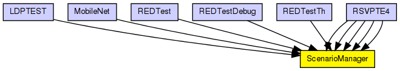
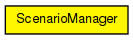

ScenarioManager is for setting up and controlling simulation experiments. You can schedule certain events to take place at specified times, like changing a parameter value, changing the bit error rate of a connection, removing or adding connections, removing or adding routes in a routing table, etc, so that you can observe the transient behaviour.
ScenarioManager executes a script specified in XML. It has a few built-in commands, while other commands are dispatched to be carried out by given simple modules. (The C++ class of these simple modules' needs to implement the IScriptable interface, and the processCommand() method must be redefined accordingly).
An example script:
<scenario>
<set-param t="10" module="host[1].mobility" par="speed" value="5"/>
<set-param t="20" module="host[1].mobility" par="speed" value="30"/>
<at t="50">
<set-param module="host[2].mobility" par="speed" value="10"/>
<set-param module="host[3].mobility" par="speed" value="10"/>
</at>
</scenario>
Built-in commands: <set-param>, <set-channel-attr>, <at>.
All commands have a t attribute which carries the simulation time at which the command has to be carried out. You can group several commands to be carried out at the same simulation time using <at>, and then only the <at> command is needed to have a t attribute.
Supported attributes:
The following diagram shows usage relationships between types. Unresolved types are missing from the diagram.
The following diagram shows inheritance relationships for this type. Unresolved types are missing from the diagram.
| Name | Type | Description |
|---|---|---|
| LDPTEST | network | (no description) |
| MobileNet | network | (no description) |
| REDTest | network | (no description) |
| REDTestDebug | network | (no description) |
| REDTestTh | network | (no description) |
| RSVPTE4 | network |
Example network to demonstrate RSVP-TE. |
| RSVPTE4 | network |
Example network to demonstrate RSVP-TE. |
| RSVPTE4 | network |
Example network to demonstrate RSVP-TE. |
| RSVPTE4 | network |
Example network to demonstrate RSVP-TE. |
| RSVPTE4 | network |
Example network to demonstrate RSVP-TE. |
| Name | Type | Default value | Description |
|---|---|---|---|
| script | xml |
| Name | Value | Description |
|---|---|---|
| display | i=block/control_s | |
| labels | node |
// // ScenarioManager is for setting up and controlling simulation experiments. // You can schedule certain events to take place at specified times, // like changing a parameter value, changing the bit error rate of // a connection, removing or adding connections, removing or // adding routes in a routing table, etc, so that you can observe the // transient behaviour. // // ScenarioManager executes a script specified in XML. It has a few // built-in commands, while other commands are dispatched to be carried out // by given simple modules. (The C++ class of these simple modules' needs // to implement the IScriptable interface, and the processCommand() method // must be redefined accordingly). // // An example script: // // <pre> // <scenario> // <set-param t="10" module="host[1].mobility" par="speed" value="5"/> // <set-param t="20" module="host[1].mobility" par="speed" value="30"/> // <at t="50"> // <set-param module="host[2].mobility" par="speed" value="10"/> // <set-param module="host[3].mobility" par="speed" value="10"/> // </at> // </scenario> // </pre> // // Built-in commands: <set-param>, <set-channel-attr>, <at>. // // All commands have a t attribute which carries the simulation time // at which the command has to be carried out. You can group several commands // to be carried out at the same simulation time using <at>, and // then only the <at> command is needed to have a t attribute. // // Supported attributes: // - <set-param>: module, par, value. // - <set-channel-attr>: src-module, src-gate, attr, value. // simple ScenarioManager { parameters: xml script; @display("i=block/control_s"); @labels(node,mpls-node); }